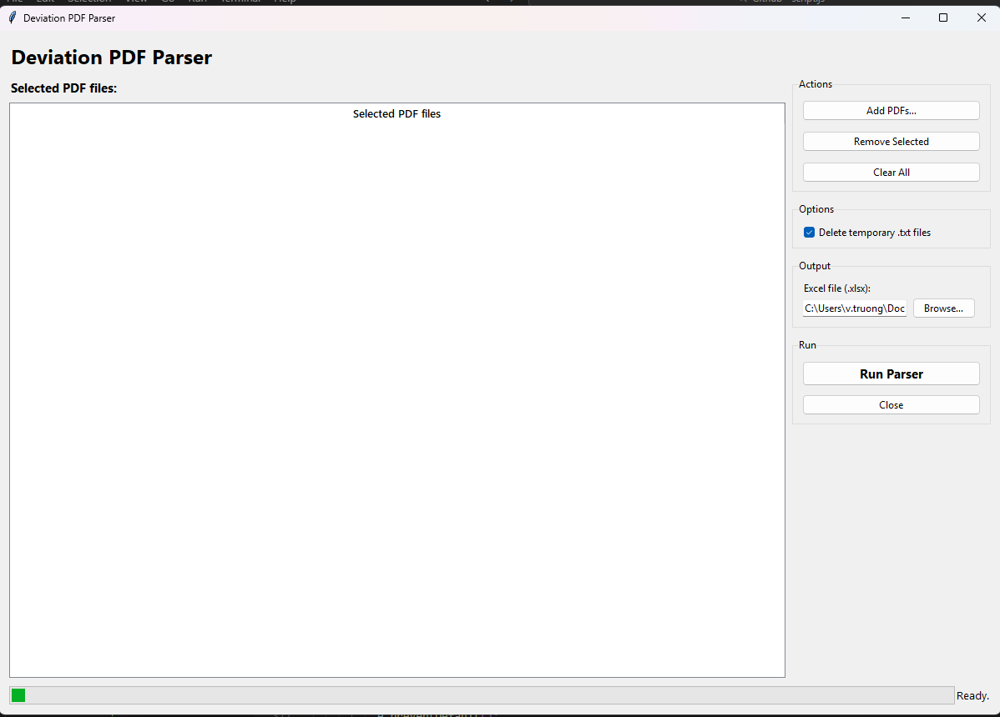
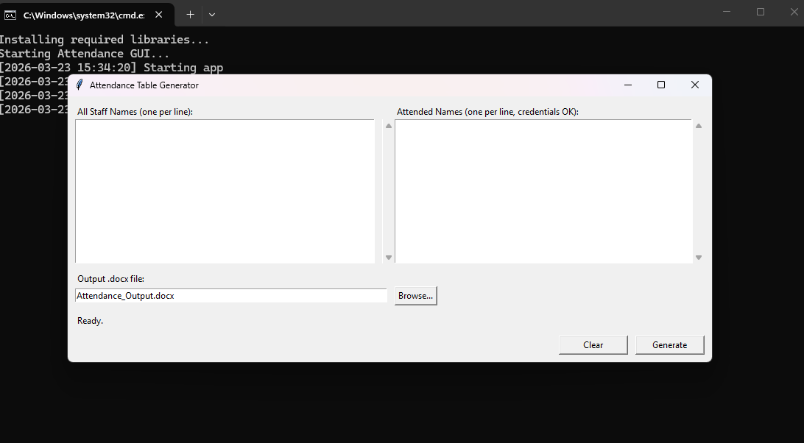

Workplace Efficiency Scripts
A growing collection of purpose-built Python utilities that automate tedious data-processing tasks in a workplace setting. Each script has a simple GUI, reads from standard Excel/CSV exports, and produces clean reports — no technical expertise required from end users.
The Problem
Operational teams in regulated environments deal with a constant stream of data reconciliation tasks: comparing training records across systems, parsing visitor schedules, tracking deviations, and generating compliance reports. These tasks share common traits:
- Data lives in multiple Excel/CSV exports from different systems that don't talk to each other.
- Staff manually cross-reference files in Excel, which is slow and error-prone.
- Reports must be generated on tight deadlines — often same-day turnaround.
- The people performing these tasks are domain experts, not programmers.
The Scripts
Training Comparison Tool
Compares training progress between a CSV/CSX export and an XLSX assignment file to identify incomplete trainings. Optionally integrates an email roster for contact validation.
- Matches employees by normalized employee number and course name
- Filters completed trainings (100%) automatically
- Detects Leave of Absence employees and reports them separately
- Outputs result.csv, result.xlsx, missing emails report, and diagnostics
- Auto-detects CSV delimiter (comma, semicolon, tab)
Training Tracker Updater
An extended version of the comparison tool that updates an existing tracker spreadsheet with the latest training status data, preserving historical records while flagging new gaps.
- Merge-updates existing tracker with fresh export data
- Highlights newly missing trainings vs. previously known gaps
- Email validation against a separate roster file
- Summary metrics: unique names, LOA count, missing email count
Visitor Schedule Parser
Parses exported visitor schedule data, deduplicates entries, and produces a clean consolidated report ready for distribution or import into other systems.
- Reads complex multi-sheet Excel exports
- Intelligent deduplication based on name + date + purpose
- Planned visit parsing with date range support
- GUI with file selection and one-click processing
Deviation Report Parser
Extracts deviation data from exported study reports and generates a formatted tracker spreadsheet suitable for compliance review and trending analysis.
- Parses structured deviation exports into normalized rows
- Generates formatted Excel output with proper column widths
- Supports multiple study formats and date patterns
- Batch file launcher for non-technical users
Shared Design Principles
- Zero-config for end users: Each script ships with a .bat launcher that installs dependencies and opens the GUI — double-click and go.
- Defensive parsing: All scripts handle missing columns, empty rows, encoding issues, and unexpected formats with clear error messages.
- Output alongside input: Results are written to the same directory as the input files, so users always know where to find them.
- Minimal dependencies: Only pandas and openpyxl — no heavy frameworks or internet connectivity required.
- Consistent GUI pattern: Every script uses the same Tkinter layout: file selectors at top, Run button in the middle, status output at bottom.
Screenshots


Challenges & Solutions
- Inconsistent export formats: Source systems produce slightly different column names and date formats over time. I built flexible column-matching logic that normalizes headers before processing.
- Large file sizes: Some training exports contain 10,000+ rows. pandas handles the heavy lifting, but I had to optimize memory usage for machines with limited RAM.
- User trust: Non-technical users needed confidence the tools produced correct results. I added diagnostics output (input/output row counts, match rates) so users can verify at a glance.
- Distribution without IT support: No admin privileges available to install Python. Each tool uses a .bat file that invokes the system Python launcher (`py`) and pip-installs dependencies at first run.
Outcomes & Impact
- Training comparison reports that took 2–3 hours now complete in under 30 seconds.
- Eliminated manual cross-referencing errors in compliance tracking.
- Tools adopted by team members with no programming background.
- Diagnostics and missing-email reports caught data quality issues upstream.
Lessons Learned
- The best automation tools are the ones that feel invisible — users should only interact with a file picker and a Run button.
- Always produce a diagnostics file alongside the main output. It answers "did it work?" before anyone has to open the result.
- Shipping with a .bat launcher instead of requiring a Python install dropped the adoption barrier to near zero.
Future Improvements
- Consolidate all scripts into a single tabbed desktop application.
- Add scheduled/automated runs (watch folder for new exports, process automatically).
- Email report delivery for managers who need results without opening files.
- Package as a standalone .exe to eliminate the Python dependency entirely.